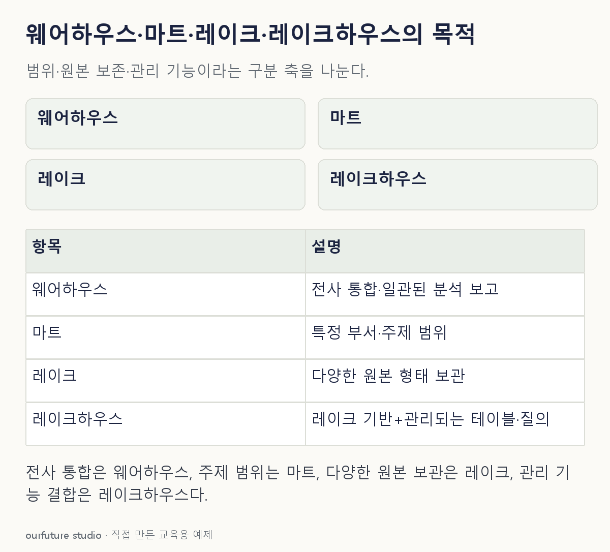

핵심 이론
웨어하우스는 여러 원천을 통합해 일관된 분석·보고를 지원하는 정리된 자료 체계로 설명한다. 데이터 마트는 특정 부서나 주제에 초점을 맞춘 분석 범위다. 마트가 반드시 전사 웨어하우스에서만 파생되는 것은 아니며, 범위와 목적을 함께 확인한다.
데이터 레이크는 표뿐 아니라 원본 파일, 로그, 이미지 등 다양한 자료를 담는 저장 접근이다. 레이크하우스는 이런 저장 기반에 테이블 관리, 질의와 스키마·트랜잭션 관리 같은 웨어하우스의 성격을 결합하려는 접근으로 이해한다. 실제 제공 기능은 제품과 구현에 따라 다르다.
레이크에 넣었다고 품질 검증이 끝나는 것은 아니며 레이크하우스라는 이름만으로 어떤 질의에서도 더 빠르다고 할 수 없다. 원본 보존, 전사 지표, 부서별 분석, 관리 기능처럼 문제에 명시된 요구를 기준으로 구분한다.
작은 예제로 확인하기
소매 회사의 자체 저장 요구를 비교한다.
| 요구 | 연결되는 개념 |
|---|---|
| 전사 매출 지표를 통합해 보고 | 웨어하우스 |
| 마케팅 부서의 캠페인 분석 범위 | 마트 |
| 원본 영상·로그·표 파일 보관 | 레이크 |
| 레이크 자료에 관리되는 테이블·질의 기능 결합 | 레이크하우스 |
한 조직에서 이 구조들을 함께 사용할 수 있다. 네 개를 서로 배타적인 발전 단계로 외우지 않는다. 마트는 누구와 어떤 주제에 필요한 범위인지에 초점이 있고, 레이크하우스는 저장과 관리 기능을 결합하는 구조에 초점이 있다. 따라서 레이크하우스 기반 안에 마케팅 마트 범위를 구성할 수도 있다. 네 이름을 한 줄의 발전 단계나 서로 하나만 고르는 전체 조직 형태로 외우지 않는다.
그림으로 확인하기

직접 고르기
전사 자료 중 마케팅 부서의 캠페인 분석에 필요한 범위를 구성한다.
분석 범위를 가장 직접 설명하는 것은?
- 1. 데이터 마트
- 2. 원본 영상 코덱
- 3. 항상 전사 전체와 같은 범위
- 4. 워크플로 스케줄러
정답과 오답의 이유 확인하기
정답 1번 — 데이터 마트
특정 부서와 주제에 초점을 맞춘 분석 자료 범위는 데이터 마트로 설명할 수 있다.
- 2번은 영상 표현 방식이다.
- 3번은 부서·주제로 한정한다는 조건과 다르다.
- 4번은 작업 실행 순서를 관리하는 역할이다.
조건 하나 바꾸어 풀기
요구를 “원본 영상·로그를 보관하면서 관리되는 테이블과 질의 기능도 함께 제공”으로 바꾸면?
풀이: 레이크하우스 접근을 검토할 수 있다.
자료의 다양성에 더해 테이블 관리와 분석 기능의 결합을 명시했다. 실제 지원 여부는 구현을 확인해야 한다.
다시 떠올릴 단서
전사 통합·주제 범위·원본 다양성·관리 기능을 나눈다.
근거와 적용 조건
- AWS: Data lake vs data warehouse vs data mart — 저장 목적과 범위의 비교. 확인일 2026-10-30.
- Microsoft Learn: Store data in Microsoft Fabric — Lakehouse for flexible data storage 및 Warehouse for structured analytics; 제품 구현 사례의 범위. 확인일 2026-10-30.
상황·수치·보기·조건 변경은 자체 교육 예제다. 민간 복원 문항의 공식 정답이나 실제 성능·학습 효과를 뜻하지 않는다.
읽은 내용을 적용해 보기
요구에 가장 직접 대응하는 교육 개념이다. 제품 추천·실제 기능 검증·성능 벤치마크가 아니다.